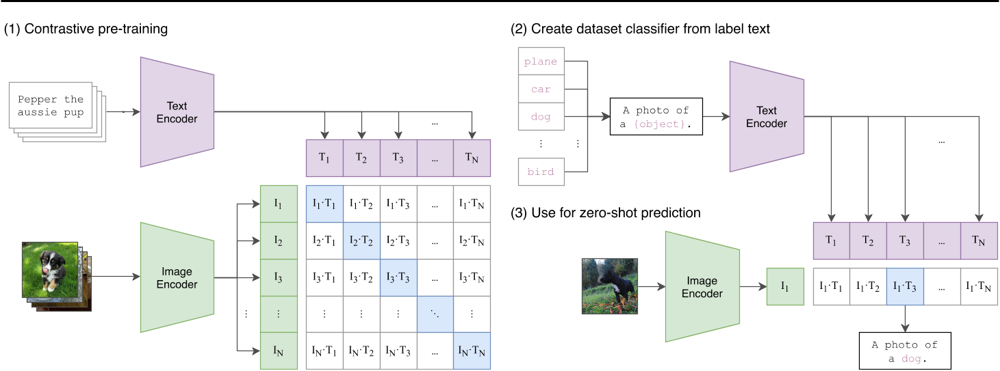

前言
本文思想
- Natural language supervision
- Creating a sufficiently large Dataset
- Selecting an efficient pre-training method
- Choosing and scaling a method
clip
摘要
最先进的计算机视觉系统经过训练可以预测一组固定的预定对象类别，这种受限的监督形式限制了它们的通用性和可用性，因为需要额外的标记数据来指定任何其他视觉概念，而直接从原始文本中学习图像是一种很有前途的替代方案，它利用了更广泛的监督来源。
我们证明，预测哪个标题与哪个图像对应的简单预训练任务是一种有效且可扩展的方法，可以在从互联网收集的 4 亿（图像、文本）对的数据集上从头开始学习 SOTA 图像表示。 预训练后，使用自然语言来引用学习的视觉概念（或描述新的视觉概念），从而实现模型零样本传输到下游任务。 我们通过对 30 多个不同的现有计算机视觉数据集进行基准测试来研究这种方法的性能，涵盖 OCR、视频中的动作识别、地理定位和许多类型的细粒度对象分类等任务。
该模型可以轻松地迁移到大多数任务，并且通常可以与完全监督的基线竞争，而无需任何数据集特定的训练。 例如，我们在 ImageNet 零样本上匹配原始 ResNet-50 的准确性，而无需使用其所训练的 128 万个训练样本中的任何一个。
一，简介及本文工作灵感
①NLP近年来飞速发展。从网络上爬下一些文本形成数据集，一些NLP模型可以直接在这个数据集上预训练，再到其他数据集做任务时，这个模型可以不使用这个数据集的任何数据（zero-shot）进行参数微调而直接做任务。zero-shot transfer就是零样本迁移到下游任务的意思。GPT-3是更通用化的 NLP 模型，也是openAI的作品。
②计算机视觉，在ImageNet等人工标记的数据集上预训练模型仍然是标准的做法。
③Visual N-Grams促成CLIP的诞生的最重要的论文。
【Visual N-Grams：用自然语言监督信号来让促成一些现存的CV分类数据集(包含ImageNet数据集)实现zero-shot transfer。】
二，方法
- 自然语言监督
①这不是一个新想法，然而用来描述这个领域工作的术语是多样的，并且动机是多样的。有很多人都引入了从有图像配对的文本中学习视觉表示的方法，但它们将其方法分别描述为无监督、自监督、弱监督和有监督。
②与大多数无监督或自监督的学习方法相比，从自然语言中学习也有一个重要的优势，因为它不仅“只是”学习一种表示，而且还将该表示与语言联系起来，从而实现灵活的zero-shot transfer。 创建一个足够大的数据集
作者用4亿对来自网络的图文数据集，将文本作为图像标签，进行训练。这个数据集称为WebImageText（WIT）选择一种有效的预训练方法
这是一个简单的有监督的contrastive任务。它将图片分类任务转换为图文匹配任务。CLIP的模型是比较简单的，它的贡献点在于采用了海量图文对数据和超大batch size进行预训练，并不在于其模型结构。计算模态之间的cosine similarity，让 $N$ 个匹配的图文对相似度最大，$N^2-N$ 不匹配的图文对相似度最小对角线上都是配对的正样本对，而矩阵的其他元素，则是由同个batch内的图片和不配对的文本（相反亦然）组成的负样本。这种策略可以形成 $N^2-N$ 个负样本。CLIP的模型结构和正负样本组成策略并不复杂，也即是从batch内部去构成负样本。

作者不使用表示空间和对比embedding空间之间的非线性投影，因为作者没有注意到这两个版本之间的训练效率的差异，并推测非线性投影只有在自监督表示学习方法中才可能与当前图像的细节共同适应。
- 选择和缩放模型

the antialiased rect-2 blur pooling的示意图在左下角。第一步为max pooling，这一步操作能够保留平移不变性，第二步为降采样subsampling，这一步操作会破坏平移不变性，然后在两者中间插入一个低通滤波器（二维图像就是卷积运算），这是为了尽最大努力保留平移不变性。
Image Encoder: 使用一个简单的baseline来平均分配额外的算力，以增加模型的宽度、深度和分辨率。
Text Encoder: 只缩放模型的宽度，使其与计算出的ResNet宽度的增加成正比，而不缩放深度，因为作者发现CLIP的性能对文本编码器的容量不那么敏感。
三，迁移到零样本任务
- 输入：一张图片 + 所有类别转换的文本（100个类别就是100个文本描述）。
- 计算图像的特征嵌入和由它们各自的编码器对可能的文本集的特征嵌入。
- 计算这些嵌入的cosine similarity，用温度参数τ进行缩放，并通过softmax归一化为概率分布。
注意: 该预测层是一个多项式logistic回归分类器，具有L2归一化输入、L2归一化权值、no bias和temperature scaling。
对比visual N-gram的初始化
visual N-GRAMS受n-gram模型的启发，n-gram模型中每一个字节片段称为gram，对所有gram的出现频次进行统计，进行过滤，形成关键gram列表，也就成了文本的向量特征空间。
该模型基于这样一种假设：第N个词的出现只与前面N-1个词相关，而与其它任何词都不相关，整句的概率就是各个词出现概率的乘积。这些概率可以通过直接从语料中统计N个词同时出现的次数得到。
visual N-GRAMS使用差分版本的Jelinek-Mercer平滑来最大化给定图像的所有文本n-gram的概率。
visual N-GRAMS为了进行zero-shot传输，他们首先将每个数据集的类名的文本转换为其n-gram表示，然后根据他们的模型计算其概率，预测得分最高的概率。
从结果可以看出，CLIP在aYahoo、ImageNet、SUN这三个数据集上表现比visual N-GRAMS好得多。
zero-shot，与resnet50对比
resnet50是在imagenet上训练，最后一层是1000类的全连接层。
首先在imagenet上预训练resnet50，然后去掉最后一层后将模型作为特征提取器。接着基于特征提取网络，再到新任务上训练一个简单的线性分类器，就是linear probing。
clip并没有在这些数据集上做fine tuning，而resnet50是在这些数据集上做了linear probing的。
未来工作
本文是初步分析，旨在说明通用计算机视觉模型带来的一些挑战，并了解其偏差和影响。
我们希望这项工作能够激发未来对此类模型的能力、缺点和偏差的表征的研究，并且我们很高兴与研究界就这些问题进行合作。
我们相信，社区探索是向前迈出的一大步，以进一步表征 CLIP 等模型的功能，并且最重要的是，确定它们具有良好性能的应用领域以及它们可能会降低性能的领域。 这一表征过程可以帮助研究人员提高模型在以下方面的使用可能性：
• 在研究过程的早期识别模型潜在有益的下游用途，使其他研究人员能够考虑应用。
• 提出具有高度敏感性和大量社会利益相关者的任务，这可能需要政策制定者的干预。
• 更好地描述模型中的偏差，提醒其他研究人员关注的领域和需要干预的领域。
• 创建测试套件来评估CLIP 等系统，以便我们可以在开发周期的早期更好地表征模型功能。
• 确定潜在的故障模式和进一步工作的领域。
我们计划为这项工作做出贡献，并希望这一分析为后续研究提供一些激励性的例子。
总结
我们研究了是否有可能将 NLP 中与任务无关的网络规模预训练的成功转移到另一个领域。 我们发现采用这个公式会导致计算机视觉领域出现类似的行为，并讨论了这一研究领域的社会影响。 为了优化其训练目标，CLIP 模型在预训练期间学习执行各种任务。 然后可以通过自然语言提示来利用这种任务学习，以实现向许多现有数据集的零样本迁移。 在足够的规模下，这种方法的性能可以与特定任务的监督模型相媲美，尽管仍有很大的改进空间。